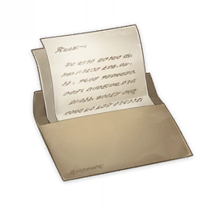

Sumeru · Books & Literature
An Ode to Khvarena
An anonymous five-stanza hymn, transcribed from a lost desert religious tradition, addresses Nagarjuna and praises Khvarena as aid against the abyssal tide.

A transcribed hymn from a lost tradition
An Ode to Khvarena is a single-volume quest item kept in the House of Daena, the Akademiya’s library in Sumeru City. Its item description says that the lore was passed down within a lost religious group in the desert and that an unnamed person transcribed it. The book never gives the writer’s name.
The verses address Nagarjuna, but an address is not an authorship credit. The poem’s speaker, date, original language, and exact route from the group to the Akademiya remain unknown.
What the five stanzas describe
The hymn returns to Khvarena in many forms. It describes Khvarena aiding the Lord of Wisdom, nourishing benevolent spirits, cleansing corruption, and helping the speaker cross the dead. Its fourth stanza says the abyss receded, the legacy of Dahri submitted to law, and heavy rains eased for a time.
The final stanza turns the poem into a conditional act of remembrance: if the dark tide returns, sing the hymn and pray to Khvarena. The text links prayer, memory, and protection, but does not explain the precise mechanics behind each image.
Khvarena and the Lord of Wisdom
The opening stanza says that Khvarena aided the Lord of Wisdom during an abyssal disaster and was scattered into many forms. A later Sumeru story says Nabu Malikata gave Khvarena to Greater Lord Rukkhadevata to protect the rainforest. That context makes the poem’s title and invocation easier to place, though the hymn does not name Nabu Malikata or spell out that gift’s full history.
The second stanza mentions a final descendant of the god of grass and trees and heroes who resist a catastrophe. The wording may evoke Rukkhadevata and the people who fought the Abyss, but the poem does not identify every person or event. Those connections are readings across sources, not a complete key supplied by the hymn itself.
Nagarjuna, the Order, and Dahri
The later World Quest Khvarena of Good and Evil calls Nagarjuna the first Vijnanapati of the Order of Skeptics. It also uses Dahri as a name for Khaenri’ah. These details make the Order a strong candidate for the lost religious group mentioned in the item description, but the book itself never names the group or confirms that identification.
The line about Dahri’s legacy is brief and does not explain what submitted to law or when. It can be compared with the quest’s account of the Skeptics, the Pari, and their ancient struggle against the Abyss, while keeping the poem’s compressed claim separate from that fuller story.
Religious imagery and the abyssal tide
The hymn uses ideas of cleansing, rebirth, a pure land, chakras, and karmic seeds. These images present Khvarena as a force of restoration and describe earthly life as shaped by causes that outlast one moment. The text does not define a complete afterlife doctrine or explain how those ideas fit every Sumeru tradition.
Its abyss imagery also needs to stay at the level the poem provides. Later quests show Khvarena purifying corruption and explain the Pari’s role in containing the Abyss, but the hymn does not name the Tunigi Hollow, Durin, Elynas, or a specific battle.
The title and Version 3.6 revision
The book first appeared in Version 3.0 as An Ode to Soul-Light. Version 3.6 renamed it An Ode to Khvarena and replaced the older wording in the text. This change aligns the earlier poem with the name the game later gives the protective light in the desert story.
The revision helps readers connect the text to Khvarena, but it does not supply a missing author or prove that the poem records one exact event. The item’s own description still presents it as a transcription of a tradition whose community has been lost.
What remains unresolved
The game has not identified the hymn’s author or transcriber, dated its original composition, or named the lost religious group directly. It has also left open who speaks in the first person, which historical figures the poem describes, and how literally to read its final prayer.
A careful reading keeps three layers apart: the words of the hymn, the item description about its transmission, and later quest revelations about Khvarena and the Order of Skeptics. Together they create context without turning every poetic phrase into a documented historical event.
This is an original CoreGG reading guide, not an official HoYoverse article or a reproduction of the game text. Source links below identify the records used so you can check the original context.
Sources & references
Check these sources for the original game text and reference trail.